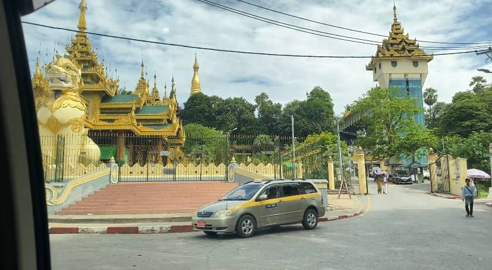

Transportation system in eco-city

Abstract:
Getting around in cities can look very different depending on where you are in the world. Today, people travel in various ways depending on the country, culture, and available transportation option. In Europe and Japan, high-speed trains and bicycles are very popular because they are fast, efficient, and eco-friendly. In many parts of Africa and Asia, people often travel by bus, scooter, or on foot. In the United States, most poeple rely on private cars for everyday travel. There are many ways to move from place to place-cars, buses, trains, bikes, scooter, and even walking. Among these, cars are still the most common method of transportation in many parts of the world. However, cars are still the most common method of transportation in many parts of the world.
However, cars that run on fuel produce harmful gases. These gases pollute the air, harm the environment, and can make people sick. Also, when too many cars are on the world, traffic jams happen more often, which wastes time and causes stress. That's why we need to think about how to reduce the number of vehicles we use. One of the best ways to do this is by using more public transportation. Public transport, such as buses, trains, and subways, can carry many people at once. For example, a double-decker bus can hold up to 100 people, while a car can usualy only carry or 5. This means that it takes about 20 cars to transport the same number of people as one bus. using public transportation has many benefits. It reduces air pollution, lowers greenhouse gas emissions, and helps cut down on trafiic jams. It also makes cities safer and more peaceful. if more people choose oublic transport, there will be fewer cars on the road, cleaner air and less noise. To make public transport even better, cities can build more bu lines, train systems, and bike lanes. They can also use electric buses and trains to reduce t]pollution ever more. Walking and biking are also great choices that help protect the environmetn.
In conclusion,, while cars are useful, using them too much causes many problems By choosing public transportation or other eco-friendly ways to travel, we can help crete cleaner, safer and healthier cities for everyone.
By Min Thet Naing
Download a PDF file